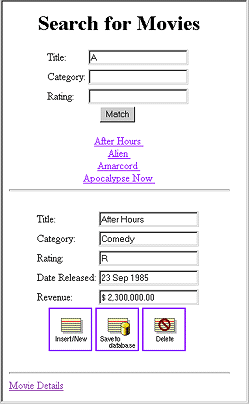

The
Movies Application
The Movies application has two pages, each of which allows
you to access information from the database in different ways:
- MovieSearch (the
main page) lets you search for movies that match user-specified criteria.
For example, you can search for all comedies starting with the letter
"A". Once you find the movie you're looking for, you can make
changes to its data or delete it. You can also use this page to
insert new movies into the database.
- MovieDetails displays the actors who
star in a selected movie and the roles those actors play. You can
add new roles, change the name of a role, and assign a different
actor to a role.

![[image: ../Art/detail.gif]](../Art/detail.gif)
© 2001 Apple Computer, Inc.